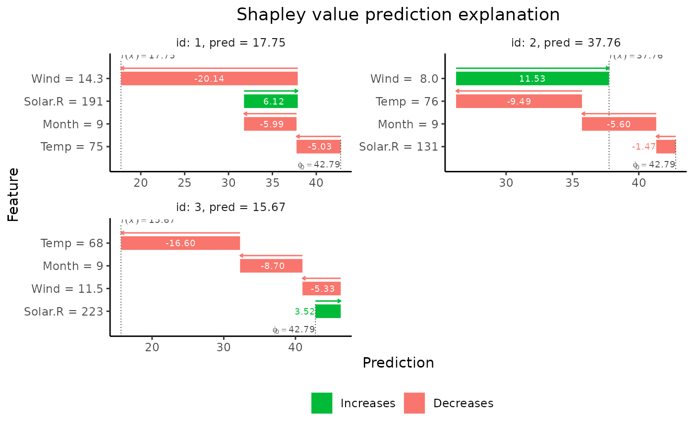

Computes dependence-aware Shapley values for observations in x_explain from the specified
model by using the method specified in approach to estimate the conditional expectation.
finalize_explanation(vS_list, internal)List
Output from compute_vS()
List.
Holds all parameters, data, functions and computed objects used within explain()
The list contains one or more of the elements parameters, data, objects, output.
Object of class c("shapr", "list"). Contains the following items:
data.table with the estimated Shapley values
List with the different parameters, data and functions used internally
Numeric vector with the predictions for the explained observations
List with the values of the MSEv evaluation criterion for the approach.
shapley_values is a data.table where the number of rows equals
the number of observations you'd like to explain, and the number of columns equals m +1,
where m equals the total number of features in your model.
If shapley_values[i, j + 1] > 0 it indicates that the j-th feature increased the prediction for
the i-th observation. Likewise, if shapley_values[i, j + 1] < 0 it indicates that the j-th feature
decreased the prediction for the i-th observation.
The magnitude of the value is also important to notice. E.g. if shapley_values[i, k + 1] and
shapley_values[i, j + 1] are greater than 0, where j != k, and
shapley_values[i, k + 1] > shapley_values[i, j + 1] this indicates that feature
j and k both increased the value of the prediction, but that the effect of the k-th
feature was larger than the j-th feature.
The first column in dt, called none, is the prediction value not assigned to any of the features
(\(\phi\)0).
It's equal for all observations and set by the user through the argument prediction_zero.
The difference between the prediction and none is distributed among the other features.
In theory this value should be the expected prediction without conditioning on any features.
Typically we set this value equal to the mean of the response variable in our training data, but other choices
such as the mean of the predictions in the training data are also reasonable. explain()
The most important thing to notice is that shapr has implemented six different
approaches for estimating the conditional distributions of the data, namely "empirical",
"gaussian", "copula", "ctree", "categorical", "timeseries", and "independence".
In addition, the user also has the option of combining the different approaches.
E.g., if you're in a situation where you have trained a model that consists of 10 features,
and you'd like to use the "gaussian" approach when you condition on a single feature,
the "empirical" approach if you condition on 2-5 features, and "copula" version
if you condition on more than 5 features this can be done by simply passing
approach = c("gaussian", rep("empirical", 4), rep("copula", 4)). If
"approach[i]" = "gaussian" means that you'd like to use the "gaussian" approach
when conditioning on i features. Conditioning on all features needs no approach as that is given
by the complete prediction itself, and should thus not be part of the vector.
For approach="ctree", n_samples corresponds to the number of samples
from the leaf node (see an exception related to the sample argument).
For approach="empirical", n_samples is the \(K\) parameter in equations (14-15) of
Aas et al. (2021), i.e. the maximum number of observations (with largest weights) that is used, see also the
empirical.eta argument.
Aas, K., Jullum, M., & L<U+00F8>land, A. (2021). Explaining individual predictions when features are dependent: More accurate approximations to Shapley values. Artificial Intelligence, 298, 103502.
# Load example data
data("airquality")
airquality <- airquality[complete.cases(airquality), ]
x_var <- c("Solar.R", "Wind", "Temp", "Month")
y_var <- "Ozone"
# Split data into test- and training data
data_train <- head(airquality, -3)
data_explain <- tail(airquality, 3)
x_train <- data_train[, x_var]
x_explain <- data_explain[, x_var]
# Fit a linear model
lm_formula <- as.formula(paste0(y_var, " ~ ", paste0(x_var, collapse = " + ")))
model <- lm(lm_formula, data = data_train)
# Explain predictions
p <- mean(data_train[, y_var])
# Empirical approach
explain1 <- explain(
model = model,
x_explain = x_explain,
x_train = x_train,
approach = "empirical",
prediction_zero = p,
n_samples = 1e2
)
#> Setting parameter 'n_batches' to 2 as a fair trade-off between memory consumption and computation time.
#> Reducing 'n_batches' typically reduces the computation time at the cost of increased memory consumption.
# Gaussian approach
explain2 <- explain(
model = model,
x_explain = x_explain,
x_train = x_train,
approach = "gaussian",
prediction_zero = p,
n_samples = 1e2
)
#> Setting parameter 'n_batches' to 10 as a fair trade-off between memory consumption and computation time.
#> Reducing 'n_batches' typically reduces the computation time at the cost of increased memory consumption.
# Gaussian copula approach
explain3 <- explain(
model = model,
x_explain = x_explain,
x_train = x_train,
approach = "copula",
prediction_zero = p,
n_samples = 1e2
)
#> Setting parameter 'n_batches' to 10 as a fair trade-off between memory consumption and computation time.
#> Reducing 'n_batches' typically reduces the computation time at the cost of increased memory consumption.
# ctree approach
explain4 <- explain(
model = model,
x_explain = x_explain,
x_train = x_train,
approach = "ctree",
prediction_zero = p,
n_samples = 1e2
)
#> Setting parameter 'n_batches' to 10 as a fair trade-off between memory consumption and computation time.
#> Reducing 'n_batches' typically reduces the computation time at the cost of increased memory consumption.
# Combined approach
approach <- c("gaussian", "gaussian", "empirical")
explain5 <- explain(
model = model,
x_explain = x_explain,
x_train = x_train,
approach = approach,
prediction_zero = p,
n_samples = 1e2
)
#> Setting parameter 'n_batches' to 10 as a fair trade-off between memory consumption and computation time.
#> Reducing 'n_batches' typically reduces the computation time at the cost of increased memory consumption.
# Print the Shapley values
print(explain1$shapley_values)
#> none Solar.R Wind Temp Month
#> <num> <num> <num> <num> <num>
#> 1: 42.78704 6.124296 -20.137653 -5.033967 -5.987303
#> 2: 42.78704 -1.470838 11.525868 -9.487924 -5.597657
#> 3: 42.78704 3.524599 -5.335059 -16.599988 -8.703929
# Plot the results
if (requireNamespace("ggplot2", quietly = TRUE)) {
plot(explain1)
plot(explain1, plot_type = "waterfall")
}

# Group-wise explanations
group_list <- list(A = c("Temp", "Month"), B = c("Wind", "Solar.R"))
explain_groups <- explain(
model = model,
x_explain = x_explain,
x_train = x_train,
group = group_list,
approach = "empirical",
prediction_zero = p,
n_samples = 1e2
)
#> Setting parameter 'n_batches' to 2 as a fair trade-off between memory consumption and computation time.
#> Reducing 'n_batches' typically reduces the computation time at the cost of increased memory consumption.
print(explain_groups$shapley_values)
#> none A B
#> <num> <num> <num>
#> 1: 42.78704 -11.63856 -13.396062
#> 2: 42.78704 -10.36824 5.337683
#> 3: 42.78704 -25.79874 -1.315633